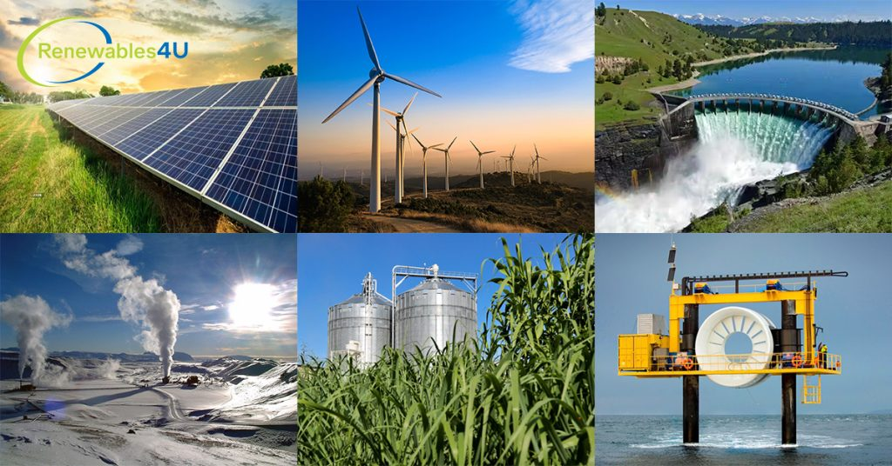

The maritime industry is increasingly turning to renewable energy sources to reduce its carbon footprint and promote sustainability. This shift is driven by the need to comply with international regulations, reduce fuel costs, and protect the environment. In this blog post, we will explore the various renewable energy technologies being adopted in the maritime sector and their benefits.
Wind energy is one of the most promising renewable energy sources for the maritime industry. Modern wind-assisted propulsion systems can significantly reduce fuel consumption and emissions.
Solar energy is another viable renewable energy source for ships. Solar panels can be installed on the decks of vessels to harness sunlight and generate electricity.
Biofuels are derived from organic materials and offer a sustainable alternative to traditional marine fuels. They can be used in existing engines with minimal modifications.
Hydrogen fuel cells are an emerging technology that can provide clean energy for ships. They generate electricity through a chemical reaction between hydrogen and oxygen, producing only water as a byproduct.
The adoption of renewable energy in the maritime industry is crucial for reducing greenhouse gas emissions and promoting sustainability. Wind, solar, biofuels, and hydrogen fuel cells are just a few of the renewable energy technologies that are transforming the sector. As these technologies continue to advance, their integration into maritime operations will become even more widespread, driving the industry towards a cleaner, greener future.